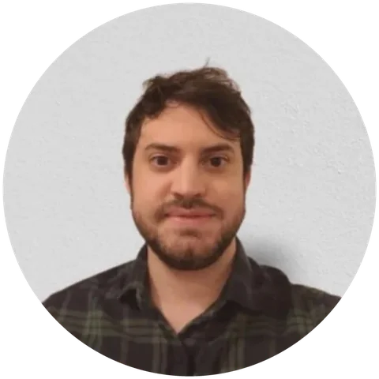
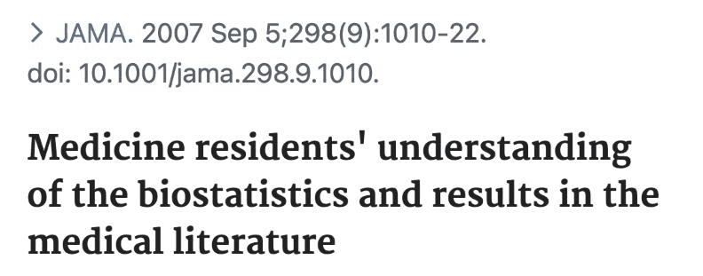
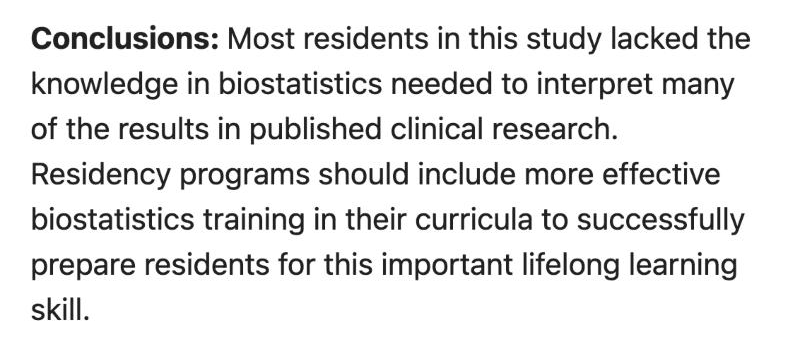

Capacitação
Para quem deseja se antecipar ao planejamento da análise de dados, em projetos já existentes ou futuros, e busca entender melhor o universo da estatística.
Você faz as análisescom autonomia, a partir do que aprendeu
Consultoria, mentoria e capacitação em estatística aplicada para pesquisadores de diferentes níveis: doutorado, residência médica, mestrado, trabalho de conclusão de curso, iniciação científica e artigos científicos em geral.
O objetivo é poupar o seu tempo, reduzir o estresse da etapa de análise e garantir resultados confiáveis.

Gustavo Prado
Bioestatístico e cientista de dados
Especialista em métodos quantitativos
Mestrando em Epidemiologia
Sobre
Sou bacharel em Estatística e Ciência de Dados pelo Instituto de Ciências Matemáticas e de Computação da Universidade de São Paulo (ICMC-USP), especialista em Métodos Quantitativos pela Universidade Estadual de Londrina (UEL) e mestrando na Faculdade de Saúde Pública da Universidade de São Paulo (FSP-USP), no Departamento de Epidemiologia.
Trabalho com análise de dados há mais de cinco anos, oferecendo consultoria, mentoria e capacitação em estatística aplicada para pesquisadores e profissionais que precisam aprimorar seus conhecimentos na área. Atualmente, sou cientista de dados no Hospital Sírio-Libanês e, anteriormente, atuei como estatístico na Academic Research Organization do Centro de Ensino e Pesquisa do Hospital Albert Einstein.
Ao longo da minha trajetória, colaborei com diversos pesquisadores na construção, na compreensão e na interpretação crítica de resultados estatísticos.
Por que buscar apoio


Esse estudo, que avaliou 277 residentes de clínica médica de 11 programas de residência, indica que a formação em estatística e análise de dados ainda é insuficiente em muitos cursos, o que torna o apoio especializado importante para conduzir e interpretar pesquisas confiáveis.
Essa lacuna não se restringe à área da saúde e aparece em diversos campos do conhecimento que, em algum momento, precisam analisar dados. Por isso, contar com orientação especializada faz diferença nas várias etapas do desenvolvimento de uma pesquisa. É essa realidade que me motiva a oferecer os serviços descritos a seguir.
Serviços oferecidos
Para quem deseja se antecipar ao planejamento da análise de dados, em projetos já existentes ou futuros, e busca entender melhor o universo da estatística.
Você faz as análisescom autonomia, a partir do que aprendeu
Para quem vai precisar analisar os dados e prefere terceirizar essa etapa. Fazemos uma reunião inicial, em que passo orientações sobre a estruturação e a preparação do banco de dados. Após o acordo, eu planejo e executo a análise.
Eu faço as análisese entrego o relatório completo
Para quem já está analisando os dados, mas travou em algum conceito ou se sente inseguro quanto à metodologia. São reuniões online para discutir o projeto e as análises adequadas, de forma mais pontual do que a capacitação.
Você faz as análisescom o meu acompanhamento
Detalhando a consultoria
Se você ainda está planejando a pesquisa, este é o momento ideal para discutir o delineamento do estudo, o cálculo do tamanho da amostra e a estratégia de coleta de dados. Se os dados já foram coletados, o foco passa a ser a escolha dos métodos analíticos mais apropriados e a forma de apresentar os resultados com clareza.
Ouço as suas necessidades e entendo os objetivos da pesquisa. Esse primeiro contato não tem custo.
Para elaborar um orçamento adequado, preciso de uma descrição do estudo: a pergunta de pesquisa, os dados coletados e o formato do banco de dados.
Com o banco de dados em mãos, avalio a abordagem estatística mais adequada à sua hipótese de pesquisa e realizo as análises.
Você recebe um relatório completo e detalhado, com métodos, tabelas, gráficos, interpretação dos resultados e referências bibliográficas.
Discutimos o relatório em uma reunião dedicada, e sigo disponível para tirar as dúvidas que surgirem depois.
Todas as informações compartilhadas são tratadas com sigilo e responsabilidade, seguindo princípios éticos reconhecidos na área. O banco de dados é usado apenas para a análise, com acesso restrito e armazenamento seguro em todas as etapas do projeto.
Acompanhamento próximo e diálogo constante em todas as etapas do projeto.
Rigor metodológico e compromisso com a qualidade em cada análise.
Entrega e atendimento ágeis, adequados à sua necessidade.
Investimento na sua pesquisa
Como cada pesquisa tem as suas particularidades, não existe um valor fixo para todos os serviços. O valor é definido no orçamento, de forma adequada e acessível.
Orçamento
Solicite um orçamento sem compromisso e descubra o melhor caminho para a sua análise de dados. O primeiro contato é gratuito para avaliarmos juntos as suas necessidades.
Apenas os resultados
As análises, com a mesma precisão estatística do serviço completo, mas sem o relatório descritivo e a interpretação detalhada. Indicado para quem já domina a interpretação estatística.
Relatório estatístico
Um relatório completo, elaborado por especialista, com resultados detalhados, interpretação crítica e reunião para esclarecimento de dúvidas.
Perguntas frequentes
Se a sua pergunta não estiver aqui, é só me chamar no WhatsApp.
Para pesquisadores, estudantes, profissionais e pequenas empresas que precisam analisar dados. A maior parte das análises é de bioestatística, mas o trabalho não se limita a esse campo.
Sim. Além dos números e das estatísticas, você recebe a interpretação dos achados e o seu sentido teórico. O foco também é que você compreenda os métodos e os resultados para se sentir mais seguro ao apresentá-los.
Na consultoria, todas as análises são executadas na linguagem de programação R. Nos demais serviços, definimos juntos quais softwares são necessários.
O orçamento que envio após a conversa inicial traz uma sugestão de prazo final, que pode ser ajustada às suas necessidades e à minha disponibilidade.
Cada projeto tem as suas particularidades, por isso não existe um valor fixo para todos os serviços. O valor é definido no orçamento e é adequado e acessível.
Na consultoria, todas as etapas são feitas por mim, Gustavo. Na capacitação e na mentoria, as análises são feitas por você.
Sim. Se, após a reunião final e a entrega do relatório, os métodos e os resultados ainda não estiverem totalmente claros, há suporte após a entrega.
As reuniões são agendadas pelo Google Meet, e você recebe o link por e-mail, por meio do Google Agenda.
Sim. É possível adaptar tabelas, figuras e texto para outro idioma, além de ajustar as cores e o formato de arquivo dos gráficos.
Se quiser esclarecer algum ponto ou verificar a disponibilidade para o seu projeto, fique à vontade para me chamar.